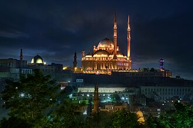

Presentación
La mosquée Mohammed-Ali est une mosquée de la ville du Caire, la capitale de l'Égypte. Inscrite dans le périmètre de l'antique citadelle de Saladin, construite par le gouverneur d'Égypte Méhémet Ali, dont elle porte le nom. Cet édifice emblématique du Caire fut édifié de 1830 à 1848 ; il s'inspire largement de l'architecture ottomane.
مسجد محمد علي أو مسجد الألبستر أو مسجد المرمر هو أحد المساجد الأثريّة الشهيرة بالقاهرة. أنشأه محمد علي باشا ما بين الفترة من 1830م إلى 1848م على الطراز العثماني، على غرار جامع السلطان أحمد بإسطنبول. ويدعى أحياناً بمسجد المرمر أو الألبستر لكثرة استخدام هذا النوع من الرخام في تكسية جدرانه. اهتم خلفاء محمد علي باشا بالمسجد فأتموا البناء وأضافوا إليه بعض الإضافات البسيطة، كما جعلوه مقراً للاحتفال بالمناسبات الدينية السنوية، وكانوا على الترتيب عباس حلمي باشا الأول، محمد سعيد باشا، إسماعيل باشا، توفيق باشا. إلا أن أضخم عملية ترميم كانت في عهد فؤاد الأول الذي أمر بإعادة المسجد إلى رونقه القديم بعد أن أصابت جدرانه التشققات بفعل خلل هندسي، كما اهتم ابنه فاروق الأول من بعده بالمسجد أيضاً وافتتحه للصلاة من جديد بعد إتمام عملية ترميمه.
The Muhammad Ali Mosque, also known as the Mosque of Muhammad Ali, is a mosque located in the Citadel of Cairo, Egypt. It was commissioned by Muhammad Ali Pasha and built between 1832 and 1857. Overlooking the city, it is one of the most visible mosques and landmarks in the skyline of Cairo. Unlike the traditional Cairene architecture that preceded it, the mosque was built in an entirely Ottoman and European-influenced style, further setting it apart from other monuments. It is sometimes called the Alabaster Mosque due to the prominent use of alabaster as a covering for its walls.
Kahire Mehmet Ali Paşa Camii Kahire Kalesi'nin de üzerine kurulduğu tepelerden birinde tüm Kahire'ye hakim bir konumda bulunur. Yapımına 1830 yılında Kavalalı Mehmet Ali Paşa döneminde başlanmış, 1848 yılında Mısır Hıdivi Abbas Hilmi Paşa döneminde tamamlanmıştır. Mimarı Boşnak Yusuf'tur.
Masjid Muhammad Ali atau Masjid Alabaster adalah sebuah masjid yang terletak di Benteng Kairo di Mesir dan dibangun oleh Muhammad Ali Pasha antara tahun 1830 dan 1848.
مسجد محمد علی مصر کا ایک معماری ہندسیات جو محافظہ قاہرہ میں واقع ہے۔
Die Muhammad-Ali-Moschee, manchmal auch als Alabastermoschee bezeichnet, ist eine der großen Moscheen in Kairo. Sie wurde im Auftrag von Pascha Muhammad Ali in den Jahren 1824 bis 1884 im osmanischen Stil mit barocken Elementen erbaut. Verantwortlich für den Bau zeichnete der Grieche Boşnak Yusuf aus Istanbul, der sich stilistisch an der dortigen Neuen Moschee orientierte.
La Mezquita de Mehmet Alí Pasha, también conocida como Mezquita de Alabastro es una mezquita situada en la parte más alta de la Ciudadela de El Cairo, en la capital de Egipto. Fue construida a instancias del gobernador otomano Mehmet Alí entre los años 1830 y 1857. Fue la mezquita más grande construida en la primera mitad del siglo XIX y es también la más visible de la capital egipcia por su elevada ubicación y la altura de sus minaretes.
La moschea di Muhammad Ali o moschea di alabastro è una moschea situata nella Cittadella del Cairo in Egitto fatta costruire da Muhammad Ali Pasha fra il 1830 ed il 1848 in memoria di Ṭūsūn Pascià, il figlio maggiore morto nel 1816.
De Mohammed Ali Moskee, ook wel de Alabaster Moskee genoemd, is de bekendste moskee van de Egyptische hoofdstad Caïro. De moskee is gebouwd in opdracht van Mohammed Ali Pasha tussen 1830 en 1848.
ムハンマド・アリー・モスク は、エジプトの首都カイロのシタデル に、およそ1830年から1848年にかけてムハンマド・アリー・パシャ（在位1805-1848年）の指示のもとに建設されたモスクである。内壁面などにアラバスター（雪花石膏）が使用されていることから「アラバスター・モスク」とも称される。
무함마드알리 모스크(Mosque of Muhammad Ali) 또는 모하메드 알리 모스크는 이집트 카이로 성채에 위치한 모스크이며 1830년부터 1848년 사이 무함마드 알리에 의해 주문되었다.
Мече́ть Муха́ммеда Али́, прозванная Алебастровой мечетью, — одна из крупнейших мечетей Каира.
Muhammad Ali-moskén eller Alabastermoskén (arabiska: مسجد محمد علي, är en moské inom befästningen Kairo citadell i Kairo i Egypten som byggdes på uppdrag av Muhammed Ali Pasha mellan 1830 och 1848.
Moscheea de Alabastru sau Moscheea lui Muhammad Ali este o moschee din Cairo, Egipt. Aceasta este una dintre cele mai mari moschei din Cairo și cea mai mare moschee construită în secolul al XIX-lea, fiind o faimoasă atracție a orașului.
En el mapa
Documentos y enlaces
- Wikipédia — Français
- Wikipédia — العربية
- Wikipédia — English
- Wikipédia — Türkçe
- Wikipédia — Bahasa Indonesia
- Wikipédia — اردو
- Wikipédia — Deutsch
- Wikipédia — Español
- Wikipédia — Italiano
- Wikipédia — Nederlands
- Wikipédia — 日本語
- Wikipédia — 한국어
- Wikipédia — Русский
- Wikipédia — Svenska
- Wikipédia — Română
- Wikidata — Q652046
Datos: Wikidata (CC0), actualizados cada 3 meses. El año es la fecha de construcción conocida más antigua del edificio: para un edificio convertido después en mezquita (como Santa Sofía), es la del edificio original. Fotos: Wikimedia Commons, autor y licencia en la página de cada foto.